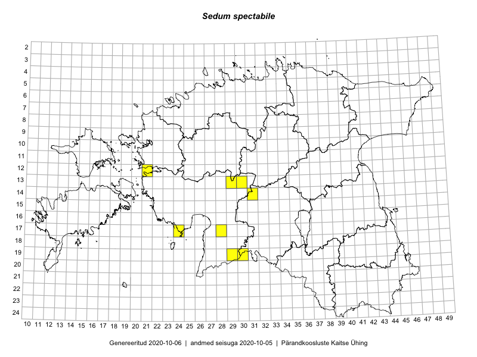

Sedum spectabile
Uuendatud: 2016-12-02
Kaardile koondatud taksonid: Sedum spectabile Boreau

Kaart põhineb 10 vaatlusel. Taksonit on leitud 8 ruudust.
Viited andmebaasikirjetele
- Peedu Saar, Liina Oja: 2015-05-22: 19-30: GPS punkt
- Peedu Saar, Liina Oja: 2015-05-22: 19-29: GPS punkt
- Peedu Saar, Liina Oja: 2015-05-22: 19-29: GPS punkt
- Peedu Saar, Liina Oja: 2015-06-09: 17-28: GPS punkt
- Ott Luuk, Eerik Leibak: 2015-05-21: 17-24: GPS punkt
- Liina Oja, Ott Luuk: 2015-05-10: 13-30: GPS punkt
- Liina Oja, Ott Luuk: 2015-05-09: 13-29: GPS punkt
- Ott Luuk, Liina Oja: 2015-05-10: 14-31: GPS punkt
- Ott Luuk, Liina Oja: 2015-05-10: 14-31: GPS punkt
- Liina Oja, Rein Kalamees: 2016-07-05: 12-21: GPS punkt